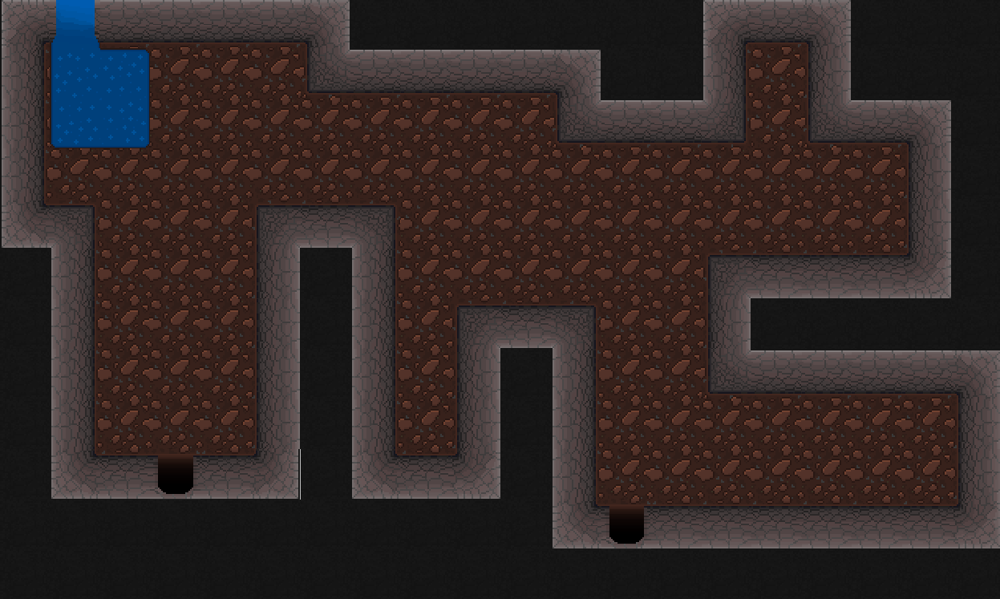

Dev-log #10: New Overworld Elements
October 19, 2019.
Hey everyone! This is the tenth dev-log on this website, which is honestly a bit crazy. I’ve had this website for 2+ years, and I’m happy to still be doing stuff on it. Thank you for continuing to read these dev-logs and here's to many more to come.
Anyways, today I want to talk about many new overworld elements. I plan to complete revamp the overworld but the end of Update 9 and expand it even more for the demo release in Update 10. So here are the first few changes and additions.
New Cave Graphics
Most of the new changes so far are in the cave. The biggest change is the updated tile-set. The cave looks much better now, and it makes it much more interesting to explore.
The cave has three floors, each one bigger than the last. I still want to make a few smaller rooms in the cave so stay tuned.
Updated Chests
Chest have been updated. They can now hold multiple items in one chest. These items can be many of the same items or mixed and matched. In this example, I have a chest that has both a piece of armor and a weapon inside.Doors
We now have doors in the game. The only one right now is on the third floor of the cave. If you approach the door you can press “E” to interact with it. If you do not have the key, the door will not open and a message will appear. Right now, the “Cave Door Key” is needed to open this door. Once you acquire it, the door will swiftly open into the ground.
Small things to note. Doors don’t have to have keys to open them and they also don’t open from behind. They also stay open once you open them regardless if you leave the room or not. I may make one-way doors in the future, but as of now I don’t see any reason for them.
Depth System
A depth system controls where objects appear in relation to other things. For example, if you are behind the sign, your sprite should be behind the sign, not in front of it. This works both ways, so if you are in front of the sign you stay in front of it. Here is an example…
Neat right? Having this system helps sell the illusion of depth. It also ensures that no 2 objects will be on top of each other incorrectly.
Updated NPCs & Signs
NPCs and signs have both been updated to work more efficiently. This is a back-end change but it is very important for keeping Phases organized and optimized. Before, for each sign I made a seperate object. So to have three signs in the overworld, it would take three separate signs called “sign1”, “sign2” and “sign3”. It could get out of hand very quickly and it would be a nightmare if I wanted to make a change to the sign system. Now, every sign is the same sign but with different text. So, if I have one hundred signs in the overworld it will only really be one in the back-end. Signs now also have collision which allows them to work properly with the depth system.A similar change has been made for NPCs. Before, each NPCs (like Alex and Chris) were 2 seperate objects, the characters themselves and the hitbox. Now, every NPC shares one hitbox and each NPCs is only one object. Their hitboxes have also been adjusted to work better with the new depth system. This effectively cuts in half the amount of object I would have to manage.
Saving
The last change is arguably the biggest. You now have the ability to save the game! We are using a system made by the amazing Shaun Spalding that makes saving really easy and robust. Simply find a white flag waving around in the wind. These flags will allow you to save the game. Even better, if they have a red cross on it you will also be able to heal there.Once you save your game, you can load it from the title screen using the “Load” button on the right. I plan to update the title screen UI later, but for now this will do just fine. Once you load, you will start off exactly where you saved with all of your items and stats intact. Also, every enemy you defeat will not reappear and every chest/door that you have opened will stay open. I still have a few polish things to do with saving but overall it is working really well.

That’s all I got for now. Next up, I want to finish redoing the graphics, starting with the overworld tiles. I also want to finish the battle system for the demo. It is nearly done, all I have to do is fix a few bugs and polish it. That’s the game plan for now, I’ll keep my social places updated so you can stay up to date.
Thanks for reading,
Andy